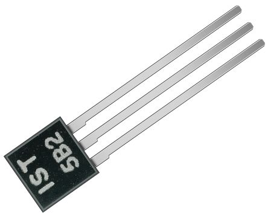
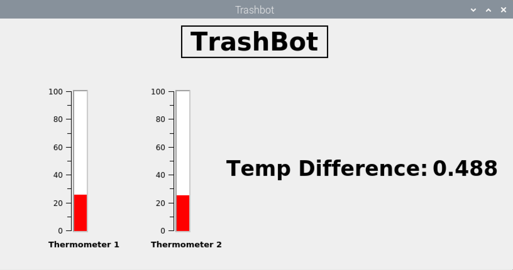

TrashBot
.gif)
Your gateway into the future!
TrashBot is an open-source project which monitors the temperature of the trash bins and reminds you to take out the trash before it goes bad!
About The Project
The inspiration of the project was taken from the waste management necessity for our planet. To target a zero waste planet, healthy habits with useful gadgets can help us move towards this global goal.
The most common issue we see is that in the public spaces and streets the trash bins are collected and emptied without even checking if they are full or not which leads to waste of resources. And sometimes, the trash bins would start overflowing and waste would collect and would continue to pile up ruining the natural and preserved spaces. To target this issue we started at a smaller level.
We planned on implementing this idea at home by implementing a smart bin - a 'TrashBot' which upon measuring the temperature of the waste would detect the decay and send an alert to user to empty the trash. Along with creating a fun home automation project this will help create a healthy habit of being mindful of clearing the waste timely.
This project can then be expanded for largescale implementation especially in residential area streets and parks. Before trash overflows and starts to decay spreading unpleasant smell in beautiful natural spaces, Trashbot will send an alert to the waste collectors.
Getting Started
There are 3 components to this project:
`Temperature Sensors`
`Email Alert`
`Gui`
Prerequisites
To get the project up and running by yourself, follow these steps:
GUI Prerequisites:
apt-get install qtdeclarative5-dev-tools
apt-get install libqcustomplot-dev
Email Messaging Prerequisites:
sudo apt-get install libssl-dev
sudo apt-get install libboost-all-dev
Temp Sensor Prerequisites:
sudo apt-get install pigpio python-pigpio python3-pigpio
Installation
Clone Repository:
git clone https://github.com/domrest/TrashBot.git
Run Cmake within directory:
cmake .
Run Make:
make
Run Program:
sudo ./Trashbot
Temperature Sensors
Usage
Trashbot receives its temperature readings via two Tsic 306 temperature sensors, which have an error of +-0.3 K and a sampling rate of 10 Hz. These are connected to the Pi via the ground and 5V Power, and with the data pins connected to seperate GPIO ports. The TSIC Temperature Sensors will communicate to the Pi passing the current temperature reading from the sensor through two packets of data transmitted at a Baud Rate of 8kHz This is done through the ZACWire Protocol. The Pi will interrupt on every bit received, storing the bit and decoding it into a temperature once both packets arrive.
Sensor Component
As stated the temperature sensors utilised within the system are two TSIC 306 sensors
These can be found on RS-Online for a price of £6.46 each.

The sensor has Three pins:
- Power
- Data
- Ground
Which were soldered to distinct wires
The Power wires were then connected to the same Power pin on the Raspberry Pi, similarly to the Ground wires conencted to the same ground pin on the raspberryPi.
GPIO pins 23 and 24 were connected to the remaining Data wires.

Messaging
The main functionality of the message functionality was created by following the guide found here: http://raspberrypiprogramming.blogspot.com/2014/09/send-email-to-gmail-in-c-with-boost-and.html
The code relies on 4 Classes for sending the message: ‘MySMTP’, ‘Socket’, ’MyOpenSSL’ and ‘Messaging’. The SMTP class which takes the server address, the port, the sender and the destination and the message subject and body. Socket maintaints the connection using the server address and port information. Since gmail is used the service address is smtp.gmail.com and the port is 465 because Secure Sockets Layer (SSL) is used. SSL is a secure way to read and write data to the connection.
For simple implementation in the main program a messaging class is created. It defines everything SMTP needs to send a message and creates different messages for when Thrashbot starts up, when the trash is heating up and when the trash has to be taken out.
Message usage
Currently the message contents and destination are hardcoded and can only be changed in Messaging.cpp.
Graphical User Interface - GUI
A very quick and easy GUI can be made using QT widgets and C++ programming.
QT is a cross platform windows development environment for Linux/Windows
and Mac.
Elements in QT are Widgets which can contain anything form plots,
buttons or text fields. They are classes. You can define your own widgets or
use ready made ones.
Qt and Qwt Widgets and Classes
A layout in QT is defined in a declarative way as layout classes forexample horizontal or vertical layouts. From existing widgets like QwtThermo you can get a thermometer widget and then set its size and color accordingly using its functions.
With various available classes like QLabel and Qfont you can change font size, colors and add labels to your GUI window.
Downloading the source code and after installing the required libraries mentioned in instructions above. You can get this handy GUI up and running in no time and can play around with it to make it your own!

.gif)